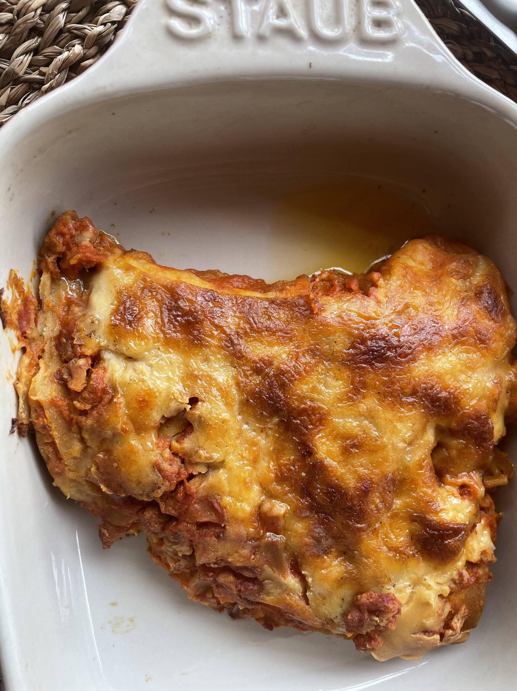

Lasaña de soja texturizada
Ingredientes
4×
- 100 g de soja texturizada
- 1 cebolla
- aceite de oliva
- 400 ml de tomate triturado
- placas de lasaña
- 500 ml de bechamel
- queso rallado

Preparación
Paso 1
Hidratar 100 g de soja texturizada en agua caliente 10min y escurrir.
Paso 2
Sofreír 1 cebolla picada con aceite de oliva, añadir la soja y 400 ml de tomate triturado, salpimentar y cocer 15min.
Paso 3
En una fuente, alternar capas de placas de lasaña, la salsa de soja y 500 ml de bechamel.
Paso 4
Cubrir con queso rallado y hornear 30min a 190ºC, hasta que esté gratinada.
Resumen
100 g de soja texturizada
Hidratar
1 cebolla
aceite de oliva
400 ml de tomate triturado
Sofreír cocer
placas de lasaña
500 ml de bechamel
alternar
queso rallado
hornear 190ºC